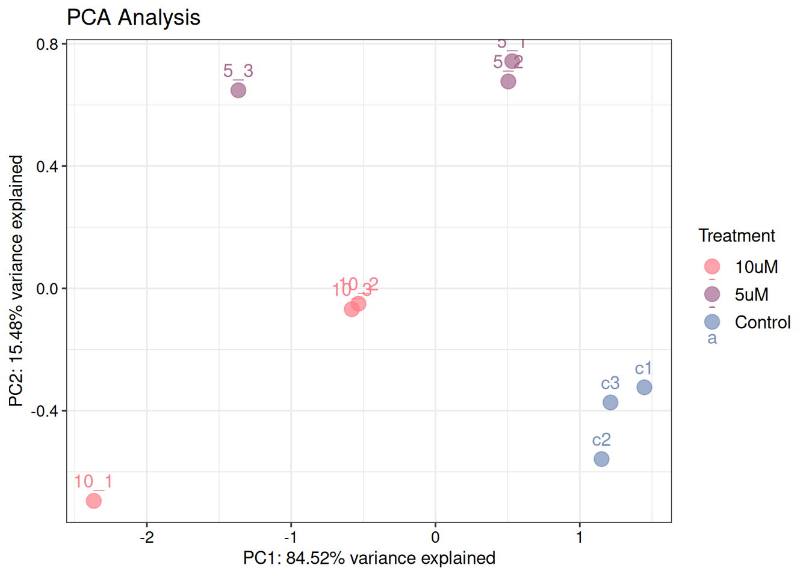
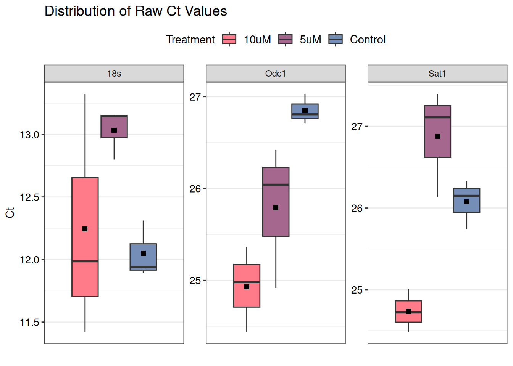
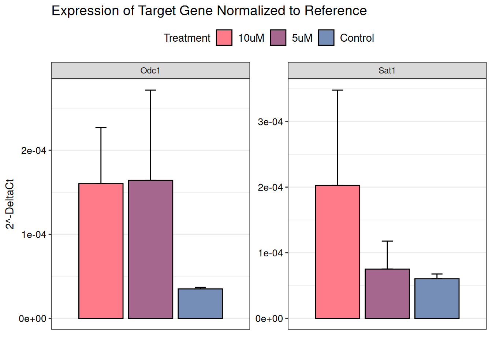
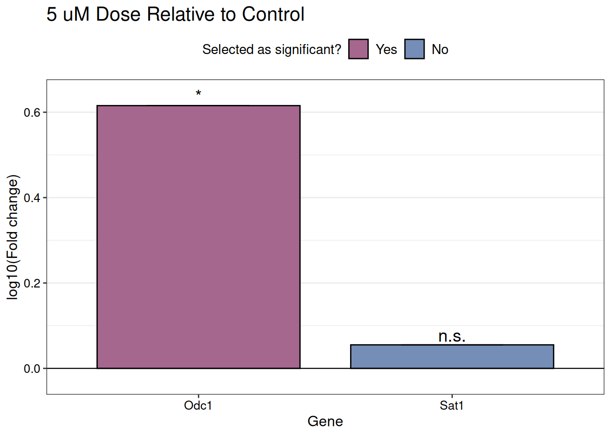
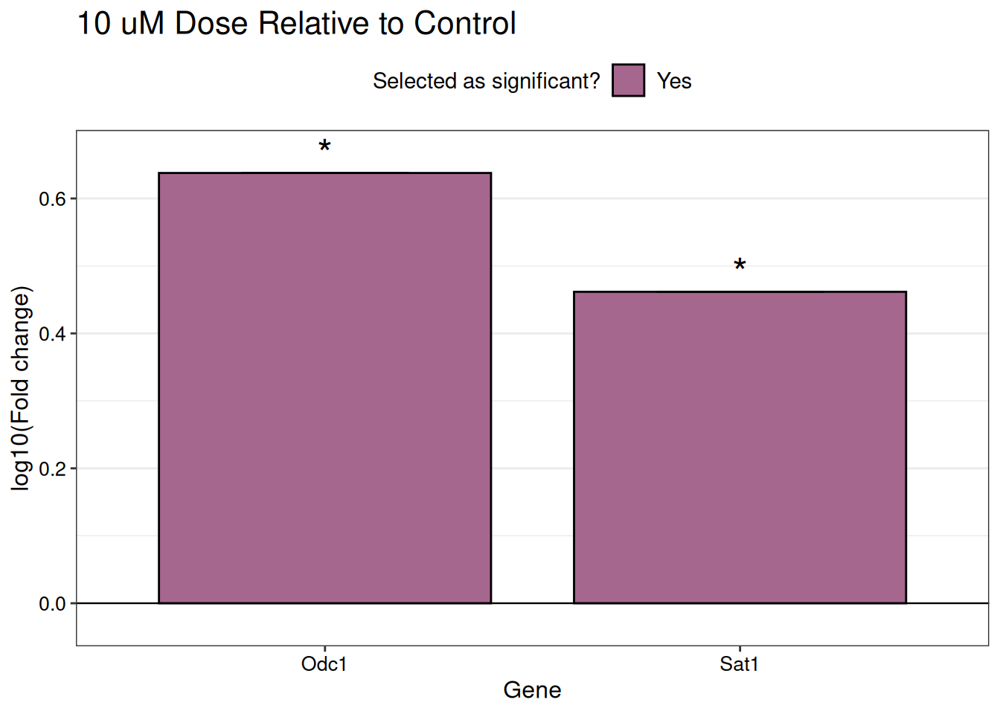

install.packages("RQdeltaCT")qPCR Fold Change Analysis Using RQdeltaCT
Intro to Reproducible Data Analysis Using R (CELL 6351) Final Project
Purpose
The goal of this project was to develop a well-documented script that streamlines the process of calculating and visualizing gene expression fold changes from raw qPCR datasets, entirely within R. For the purposes of this example, I will be showing qPCR data generated by a summer intern in my lab. The experiment is looking at the expression of polyamine metabolism genes in samples obtained from KPC mice treated with two different doses of pentamidine, which is an inhibitor of polyamine synthesis.
Workflow

RQdeltaCT package0. Installing Package
You can view the technical details about this package on CRAN or GitHub. Then follow the steps below to install and load the RQdeltaCT package. Follow the steps below to install from the CRAN repository.
Since you should already have already installed the devtools package for this class, you can also install RQdeltaCT directly from GitHub instead.
remotes::install_github("Donadelnal/RQdeltaCT")Once you have installed RQdeltaCT, you can click here to learn more about what functions are included in this package.
1. Importing & Tidying Data
This package includes built-in read_Ct_long() and read_Ct_wide() functions for importing data, but these only recognize .csv and .txt files. However, most qPCR machines export results as an Excel spreadsheet (.xls, .xlsx). Below is a way to directly import specific sheets from Excel without having to create a separate file.
# The 'readxl' package allows you to open individual sheets from Excel without having to convert it into .csv or .txt format first
install.packages("readxl")Your raw data file will probably look similar to the one below, which requires quite a bit of tidying.

The first step is to import the sheet titled “Raw Data” from the Excel file using the readxl package. I also excluded the first 47 rows of irrelevant information pertaining to the qPCR instrument and protocol.
# Load necessary packages
library(readxl)
library(tidyverse)
library(RQdeltaCT)
raw_data <- read_excel("qPCR_data.xls", sheet = "Results", skip = 47)
glimpse(raw_data)Rows: 121
Columns: 38
$ Well <chr> "151", "152", "153", "154", "155", "156", "15…
$ `Well Position` <chr> "G7", "G8", "G9", "G10", "G11", "G12", "G13",…
$ Omit <lgl> FALSE, FALSE, FALSE, FALSE, FALSE, FALSE, FAL…
$ `Sample Name` <chr> "c1", "c1", "c1", "c2", "c2", "c2", "c3", "c3…
$ `Target Name` <chr> "18s", "18s", "18s", "18s", "18s", "18s", "18…
$ Task <chr> "UNKNOWN", "UNKNOWN", "UNKNOWN", "UNKNOWN", "…
$ Reporter <chr> "SYBR", "SYBR", "SYBR", "SYBR", "SYBR", "SYBR…
$ Quencher <chr> "None", "None", "None", "None", "None", "None…
$ Quantity <lgl> NA, NA, NA, NA, NA, NA, NA, NA, NA, NA, NA, N…
$ `Quantity Mean` <lgl> NA, NA, NA, NA, NA, NA, NA, NA, NA, NA, NA, N…
$ `Quantity SD` <lgl> NA, NA, NA, NA, NA, NA, NA, NA, NA, NA, NA, N…
$ RQ <dbl> NA, 7.1089945, 7.1089945, 6.8644419, 6.864441…
$ `RQ Min` <dbl> NA, 5.5418096, 5.5418096, 5.1459794, 5.145979…
$ `RQ Max` <dbl> NA, 9.119368, 9.119368, 9.156772, 9.156772, 9…
$ CT <chr> "Undetermined", "11.990301132202148", "11.887…
$ `Ct Mean` <dbl> 11.93890, 11.93890, 11.93890, 11.89193, 11.89…
$ `Ct SD` <dbl> 0.07269488, 0.07269488, 0.07269488, 0.0913456…
$ `Delta Ct` <lgl> NA, NA, NA, NA, NA, NA, NA, NA, NA, NA, NA, N…
$ `Delta Ct Mean` <dbl> NA, -14.87034, -14.87034, -14.81983, -14.8198…
$ `Delta Ct SD` <dbl> NA, 0.18866599, 0.18866599, 0.25932723, 0.259…
$ `Delta Ct SE` <dbl> NA, 0.11289690, 0.11289690, 0.14972264, 0.149…
$ `Delta Delta Ct` <dbl> NA, -2.8296454, -2.8296454, -2.7791424, -2.77…
$ `Automatic Ct Threshold` <lgl> TRUE, TRUE, TRUE, TRUE, TRUE, TRUE, TRUE, TRU…
$ `Ct Threshold` <dbl> 0.2658328, 0.2658328, 0.2658328, 0.2658328, 0…
$ `Automatic Baseline` <lgl> TRUE, TRUE, TRUE, TRUE, TRUE, TRUE, TRUE, TRU…
$ `Baseline Start` <dbl> 3, 3, 3, 3, 3, 3, 3, 3, 3, 3, 3, 3, 3, 3, 3, …
$ `Baseline End` <dbl> 39, 7, 6, 7, 7, 7, 7, 8, 7, 8, 7, 8, 8, 8, 8,…
$ `Amp Status` <chr> "No Amp", "Amp", "Amp", "Amp", "Amp", "Amp", …
$ Comments <lgl> NA, NA, NA, NA, NA, NA, NA, NA, NA, NA, NA, N…
$ `Cq Conf` <dbl> 0.0000000, 0.9860583, 0.9873415, 0.9697938, 0…
$ CQCONF <chr> "Y", "N", "N", "N", "N", "N", "N", "N", "N", …
$ EXPFAIL <chr> "Y", "N", "N", "N", "N", "N", "N", "N", "N", …
$ NOAMP <chr> "N", "N", "N", "N", "N", "N", "N", "N", "N", …
$ Tm1 <dbl> 84.77188, 83.41451, 83.39422, 83.39422, 83.50…
$ HIGHSD <chr> "N", "N", "N", "N", "N", "N", "N", "N", "N", …
$ Tm2 <lgl> NA, NA, NA, NA, NA, NA, NA, NA, NA, NA, NA, N…
$ Tm3 <lgl> NA, NA, NA, NA, NA, NA, NA, NA, NA, NA, NA, N…
$ Tm4 <lgl> NA, NA, NA, NA, NA, NA, NA, NA, NA, NA, NA, N…Using dplyr, I selected only the columns required for calculations and filtered out rows containing the “H2O” no template controls.
select_data <- raw_data |>
select(`Sample Name`, `Target Name`, CT) |>
filter(`Sample Name` != "H2O")
glimpse(select_data)Rows: 108
Columns: 3
$ `Sample Name` <chr> "c1", "c1", "c1", "c2", "c2", "c2", "c3", "c3", "c3", "5…
$ `Target Name` <chr> "18s", "18s", "18s", "18s", "18s", "18s", "18s", "18s", …
$ CT <chr> "Undetermined", "11.990301132202148", "11.88749504089355…The RQdeltaCT package requires four columns of data: “Sample”, “Group”, “Gene”, and “Ct”. Therefore, it is necessary to re-name the column headings to ensure your data is recognized properly. I also had to add a “Group” column for grouping the biological replicates.
clean_data <- select_data |>
rename(Sample = `Sample Name`, Gene = `Target Name`, Ct = CT) |>
mutate(Group = case_when(
str_detect(Sample, "c") ~ "Control",
str_detect(Sample, "5") ~ "5uM",
str_detect(Sample, "10") ~ "10uM"))
glimpse(clean_data)Rows: 108
Columns: 4
$ Sample <chr> "c1", "c1", "c1", "c2", "c2", "c2", "c3", "c3", "c3", "5_1", "5…
$ Gene <chr> "18s", "18s", "18s", "18s", "18s", "18s", "18s", "18s", "18s", …
$ Ct <chr> "Undetermined", "11.990301132202148", "11.887495040893555", "11…
$ Group <chr> "Control", "Control", "Control", "Control", "Control", "Control…You can also play around with sample data that is included with the package.
data(data.Ct)
str(data.Ct)'data.frame': 1288 obs. of 5 variables:
$ Sample: chr "AAA1" "AAA10" "AAA12" "AAA13" ...
$ Gene : chr "ANGPT1" "ANGPT1" "ANGPT1" "ANGPT1" ...
$ Ct : chr "32.563" "34.648" "35.059" "37.135" ...
$ Group : chr "AAA" "AAA" "AAA" "AAA" ...
$ Flag : chr "OK" "OK" "OK" "OK" ...1a. Quality Control
First, let’s generate a few quick graphs to help us visualize the proportion of unreliable Ct values by flagging values that were undetermined or above the set threshold.
# Evaluate the quality of reads for each sample
sample_quality <- control_Ct_barplot_sample(data = clean_data,
flag.Ct = "Undetermined",
maxCt = 35,
colors = c("#68B2A0", "#FF7B89"))
# View tibble
tibble(sample_quality[[2]])# A tibble: 9 × 4
Sample Not.reliable Reliable Not.reliable.fraction
<fct> <int> <int> <dbl>
1 c1 4 8 0.333
2 10_2 3 9 0.25
3 10_3 3 9 0.25
4 5_1 3 9 0.25
5 5_3 3 9 0.25
6 c2 3 9 0.25
7 5_2 2 10 0.167
8 c3 2 10 0.167
9 10_1 1 11 0.0833# Evaluate the quality of reads for each gene
gene_quality <- control_Ct_barplot_gene(data = clean_data,
flag.Ct = "Undetermined",
maxCt = 35,
colors = c("#68B2A0", "#FF7B89"))
# View tibble
head(gene_quality[[2]])# A tibble: 6 × 5
Gene Group Not.reliable Reliable Not.reliable.fraction
<fct> <fct> <int> <int> <dbl>
1 Arg1 5uM 8 1 0.889
2 Arg1 Control 8 1 0.889
3 Arg1 10uM 7 2 0.778
4 18s Control 1 8 0.111
5 18s 10uM 0 9 0
6 Odc1 10uM 0 9 0 Genes with consistently weak amplification can be an indicator of poor primer efficiency, meaning these primer pairs may need to be redesigned.
1b. Data Filtering
Next, let’s filter out the genes that had at least 50% low quality reads.
low_quality_genes <- filter(gene_quality[[2]], Not.reliable.fraction > 0.5)$Gene
low_quality_genes <- unique(as.vector(low_quality_genes))
low_quality_genes[1] "Arg1"# Exclude identified genes from data set for analysis
quality_data <- filter_Ct(data = clean_data,
remove.Gene = low_quality_genes)Finally, we need to finish prepping data for analysis using the make_Ct_ready() function. Setting the argument imput.by.mean.within.groups to “TRUE” will collapse technical replicates by taking the average Ct values for each biological sample and remove any missing values.
ready_data <- make_Ct_ready(data = quality_data,
imput.by.mean.within.groups = TRUE)The data contain 0 missing values that constitute 0 percent of the total data.
Missing values were imputed using means within compared groups.ready_data# A tibble: 9 × 5
# Groups: Group [3]
Group Sample `18s` Odc1 Sat1
<chr> <chr> <dbl> <dbl> <dbl>
1 10uM 10_1 13.3 25.4 24.7
2 10uM 10_2 11.4 24.4 24.5
3 10uM 10_3 12.0 25.0 25.0
4 5uM 5_1 12.8 26.0 27.1
5 5uM 5_2 13.1 26.4 27.4
6 5uM 5_3 13.2 24.9 26.1
7 Control c1 11.9 26.8 26.1
8 Control c2 11.9 26.7 25.7
9 Control c3 12.3 27.0 26.32. Normalizing Data to Reference Gene (ΔCt)
If you are calculating 2-dCt, then set the transform argument to “TRUE”. Otherwise, set it equal to “FALSE” if you are using the 2-ddCt method.
# ΔCt method
deltaCt_results <- delta_Ct(data = ready_data,
normalise = TRUE,
ref = "18s",
transform = TRUE)
deltaCt_results# A tibble: 9 × 4
# Groups: Group [3]
Group Sample Odc1 Sat1
<chr> <chr> <dbl> <dbl>
1 10uM 10_1 0.000237 0.000371
2 10uM 10_2 0.000121 0.000117
3 10uM 10_3 0.000123 0.000120
4 5uM 5_1 0.000103 0.0000492
5 5uM 5_2 0.000101 0.0000514
6 5uM 5_3 0.000288 0.000124
7 Control c1 0.0000334 0.0000528
8 Control c2 0.0000346 0.0000676
9 Control c3 0.0000371 0.0000602# ΔΔCt method
deltaCt <- delta_Ct(data = ready_data,
normalise = TRUE,
ref = "18s",
transform = FALSE)
deltaCt# A tibble: 9 × 4
# Groups: Group [3]
Group Sample Odc1 Sat1
<chr> <chr> <dbl> <dbl>
1 10uM 10_1 12.0 11.4
2 10uM 10_2 13.0 13.1
3 10uM 10_3 13.0 13.0
4 5uM 5_1 13.2 14.3
5 5uM 5_2 13.3 14.2
6 5uM 5_3 11.8 13.0
7 Control c1 14.9 14.2
8 Control c2 14.8 13.9
9 Control c3 14.7 14.0Another quality check can be implemented to observe the consistency between biological replicates and identify any outliers by generating a PCA plot using the control_pca_sample function.
pca_check <- control_pca_sample(deltaCt,
label.size = 4,
plot.title = "PCA Analysis",
legend.title = "Treatment",
colors = c("#FF7B89", "#A5678E", "#758EB7"))
3. Relative Quantification (ΔΔCt)
The RQ_ddCt() function calculates the relative fold change values along with statistical significance (either Student’s t test or Mann-Whitney U test is performed based on Shapiro-Wilk normality test). Therefore, the RQ_ddCt() function will need to be called for each group comparison you want to make, as specified by the group.study and group.ref arguments.
# Sample size must be between 3 and 5000 for normality testing
ddCt_results_5uM <- RQ_ddCt(deltaCt,
group.study = "5uM",
group.ref = "Control",
do.tests = TRUE)
glimpse(ddCt_results_5uM)Rows: 2
Columns: 16
Groups: Gene [2]
$ Gene <chr> "Odc1", "Sat1"
$ `5uM_mean` <dbl> 12.75850, 13.84421
$ Control_mean <dbl> 14.80289, 14.02729
$ `5uM_sd` <dbl> 0.8645299, 0.7551560
$ Control_sd <dbl> 0.07732601, 0.17846670
$ `5uM_norm_p` <dbl> 0.03574696, 0.07928243
$ Control_norm_p <dbl> 0.6353363, 0.9231704
$ ddCt <dbl> -2.0443874, -0.1830792
$ FCh <dbl> 4.124981, 1.135304
$ log10FCh <dbl> 0.61542193, 0.05511233
$ t_test_p <dbl> 0.05370094, 0.71884188
$ t_test_stat <dbl> -4.0795620, -0.4086593
$ MW_test_p <pvalue> 0.04953461, 0.51269076
$ MW_test_stat <dbl> -1.9639610, 0.6546537
$ t_test_p_adj <dbl> 0.1074019, 0.7188419
$ MW_test_p_adj <dbl> 0.09906923, 0.51269076ddCt_results_10uM <- RQ_ddCt(deltaCt,
group.study = "10uM",
group.ref = "Control",
do.tests = TRUE)
glimpse(ddCt_results_10uM)Rows: 2
Columns: 16
Groups: Gene [2]
$ Gene <chr> "Odc1", "Sat1"
$ `10uM_mean` <dbl> 12.68422, 12.49364
$ Control_mean <dbl> 14.80289, 14.02729
$ `10uM_sd` <dbl> 0.5574356, 0.9489090
$ Control_sd <dbl> 0.07732601, 0.17846670
$ `10uM_norm_p` <dbl> 0.03972178, 0.04339291
$ Control_norm_p <dbl> 0.6353363, 0.9231704
$ ddCt <dbl> -2.118665, -1.533652
$ FCh <dbl> 4.342920, 2.895179
$ log10FCh <dbl> 0.6377818, 0.4616754
$ t_test_p <dbl> 0.02064176, 0.10270610
$ t_test_stat <dbl> -6.520629, -2.751153
$ MW_test_p <pvalue> 0.04953461, 0.04953461
$ MW_test_stat <dbl> -1.963961, -1.963961
$ t_test_p_adj <dbl> 0.04128353, 0.10270610
$ MW_test_p_adj <dbl> 0.04953461, 0.049534614. Visualization
# 'ggsignif' package allows you to add signficance labels to plots
library(ggsignif)4a. Box Plot
Box plots are useful for visualizing the distribution of data, so here, I used the results_boxplot function to plot the distribution of raw Ct values from my ready_data.
# Can only graph ready_data or deltaCt
final_boxplot <- results_boxplot(data = ready_data,
by.group = TRUE,
signif.show = FALSE,
faceting = TRUE,
facet.row = 1,
facet.col = 3,
colors = c("#FF7B89", "#A5678E", "#758EB7"),
plot.title = "Distribution of Raw Ct Values",
y.axis.title = "Ct",
legend.title = "Treatment") 
4b. Bar Plot
Next, I used the results_barplot function to graph the transformed delta Ct values for each treatment group.
# Can only graph ready_data or deltaCt
final_barplot <- results_barplot(deltaCt_results,
signif.show = FALSE,
faceting = TRUE,
facet.row = 1,
facet.col = 2,
colors = c("#FF7B89", "#A5678E", "#758EB7"),
plot.title = "Expression of Target Gene Normalized to Reference",
y.axis.title = "2^-DeltaCt",
legend.title = "Treatment")
4c. Fold Change Plot
Finally, the FCh_plot function can be used to graph the relative fold changes. By plotting the values on a log scale, the expression levels are centered around 0, which represents the “Control” group.
FC_plot_5uM <- FCh_plot(data = ddCt_results_5uM,
use.p = TRUE,
mode = "depends",
p.threshold = 0.05,
use.FCh = TRUE,
signif.show = TRUE,
signif.labels = c("*", "n.s."),
signif.dist = 0,
signif.size = 5,
colors = c("#A5678E", "#758EB7"),
plot.title = "5 uM Dose Relative to Control",
plot.title.size = 16,
x.axis.title = "Gene",
axis.title.size = 12)
FC_plot_10uM <- FCh_plot(data = ddCt_results_10uM,
use.p = TRUE,
mode = "depends",
p.threshold = 0.05,
use.FCh = TRUE,
signif.show = TRUE,
signif.labels = c("*", " * "),
signif.dist = 0,
signif.size = 7,
colors = c("#A5678E", "#758EB7"),
plot.title = "10 uM Dose Relative to Control",
plot.title.size = 16,
x.axis.title = "Gene",
axis.title.size = 12)
# Store calculations in data frame & view selected p-values
FC_table_5uM <- as.data.frame(FC_plot_5uM[2])
FC_table_5uM |>
select(Gene, FCh, log10FCh, test.for.comparison, p.used) Gene FCh log10FCh test.for.comparison p.used
1 Odc1 4.124981 0.61542193 Mann-Whitney.test 0.04953461
2 Sat1 1.135304 0.05511233 t.student's.test 0.71884188FC_table_10uM <- as.data.frame(FC_plot_10uM[2])
FC_table_10uM |>
select(Gene, FCh, log10FCh, test.for.comparison, p.used) Gene FCh log10FCh test.for.comparison p.used
1 Odc1 4.342920 0.6377818 Mann-Whitney.test 0.04953461
2 Sat1 2.895179 0.4616754 Mann-Whitney.test 0.04953461When you are evaluating many genes, log10(Fold Change) plots can be useful for quickly telling which ones have upregulated vs downregulated expression. Here is an example from another one of my datasets with more genes.

Conclusion: ⭐️ 3.5/5
Pros
Detailed help sheet with example data and code
Quality control & filtering abilities
Automatic normality testing and p-value calculations
Built-in graphing functions for generating quick plots
Cons
Sometimes requires extra data manipulation to achieve desired outcome
Less customization options for producing publication-quality plots